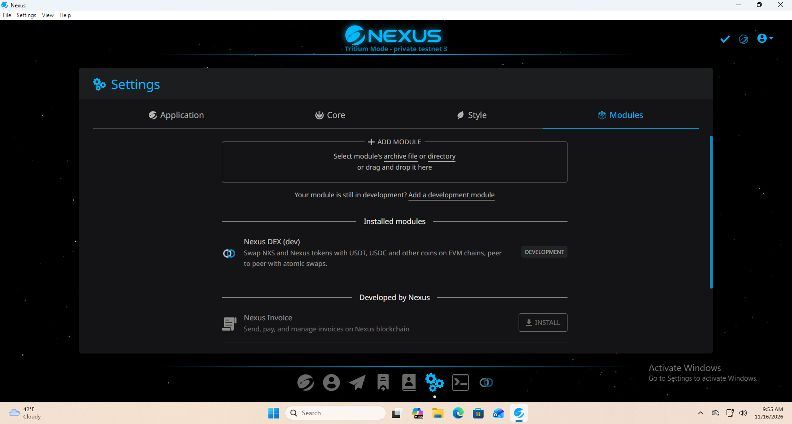
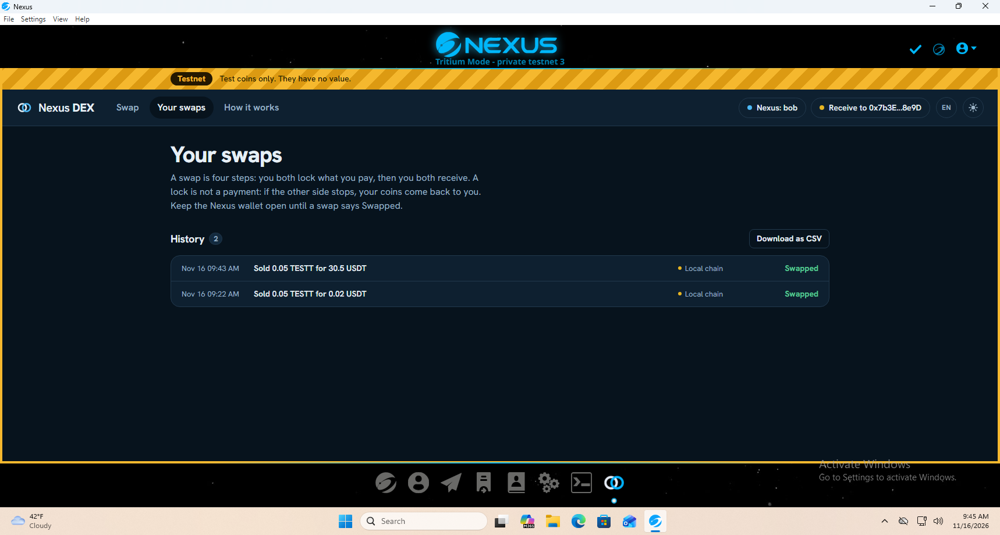

1. The checklist
| Item | What it takes | Cost | Status |
|---|---|---|---|
| NexusSwap on each EVM chain | One deploy per chain with a funded deployer, then source verification on the explorer | under 1 USD per chain | scripted, rehearsed |
| Relay (order book and watcher) | A small server with HTTPS, always on | 5 to 20 EUR a month | hosting to choose |
| Keeper (independent helper) | A second small process, ideally run by someone else than the relay | 0 to 10 EUR a month | hosting to choose |
| Gas for the watcher and keepers | A little of each chain's coin in their addresses, for collects and refunds they send for users | about 20 to 50 USD per chain to start | to fund |
| EVM RPC access | Public RPCs work; a paid plan is steadier under load | 0 to 50 USD a month | to decide |
| Nexus API node (website only) | A mainnet node with its public API, plus one or two witness nodes | a node Nexus may already run | to decide |
| Website hosting | Static files on any host or CDN, a domain | 0 to 10 EUR a month | to decide |
| Desktop wallet module | Public repository, Nexus repository verification | none | built, tested in dev mode |
| WalletConnect project id | Free account at reown.com, for paying from phone wallets | free tier | works on testnet |
| Outside audit of the contract | About 450 lines of Solidity | quote needed | recommended |
| Launch settings | Chains, tokens, largest swap, confirmations per chain | none | to decide |
| Liquidity at launch | A few makers with NXS and stablecoins (the maker program can run offers) | their own coins | to arrange |
The DEX itself takes no fees and holds no coins. The running costs are hosting and the gas the helpers spend for users. Users pay their own network fees, and a one-time 1 NXS on Nexus to create their reveal register (it lets the profile publish a swap secret).
2. What runs where
| Part | Does | Needs |
|---|---|---|
| Website | The pages people use in a browser. Signs both sides of a swap in the browser; keeps the swap in the browser's storage. | Static hosting with HTTPS; config file with the service addresses. |
| Desktop wallet module | The same pages inside Nexus Wallet. The Nexus side goes through the wallet's own core. | Nothing hosted for Nexus; the relay and the EVM RPCs, as the website. |
| Relay | Order book (offers, takes, liveness of makers), market data, and the watcher: it collects payments for sellers who only gave a receiving address, and refunds locks long past their deadline. | Node.js 24, about 200 MB of memory, a data folder, HTTPS in front (Caddy or Cloudflare); one watcher key per chain with some gas. |
| Keeper | A second, independent helper: collects on request with the secret and refunds old locks. Reads only the contracts, shares nothing with the relay. Daily limits per chain and per address so nobody can drain its gas. | Node.js, a key per chain with some gas, HTTPS. |
| Maker program (optional) | Keeps offers up around the clock for a market maker, from a server. | The maker's own Nexus profile and EVM key, its own limits. |
3. Hosting options compared
| VPS run by the DEX maintainer | Run by Nexus | Self-hosted by anyone | |
|---|---|---|---|
| What | One small rented server (for example 2 vCPU, 4 GB) with relay, keeper and the website, behind Cloudflare. | Relay and keeper on Nexus infrastructure next to its own nodes, site on a Nexus domain. | The code is open: anyone runs a relay or a keeper and points a site at it. |
| Cost | 5 to 20 EUR a month plus gas | little extra on existing servers, plus gas | borne by whoever runs it |
| Set-up effort | Low: scripted, about a day including HTTPS and monitoring | Low to medium, depends on the Nexus setup | Medium per operator |
| Trust | Users trust the maintainer to keep it up (never with their coins) | The Nexus name behind it; strongest signal for users | Spread over many; users pick a relay |
| Nexus API | Needs access to a public Nexus node | Uses the Nexus nodes directly | Each operator needs one |
| Good for | A fast beta | The long run, with the module in the official wallet | Resilience later |
Suggestion: start the beta on a VPS (relay, keeper, site) and ask Nexus to run a second keeper; move the relay to Nexus infrastructure once the module is verified. None of the options lets the host take users' coins: the worst a host can do is stop listing offers.
4. Keys and wallets
| Key | Used for | Holds |
|---|---|---|
| Deployer | Only the one deploy per chain. No role afterwards: the contract has no owner. | The deploy cost, once |
| Watcher key, per chain | The relay sends collects and refunds for users with it. | Gas only; topped up now and then |
| Keeper key, per chain | The keeper's collects and refunds. | Gas only, with daily limits |
| Relay signing | None: offers and takes are signed by the users' own keys, the relay only checks them. | Nothing |
Each key lives in a file only its service reads. A stolen helper key can only spend that key's gas: claims always pay the lock's recipient, refunds its sender.
5. Settings to decide
- Chains at launch. All five are ready. BSC and Polygon are the cheapest to use; Ethereum is the most expensive per swap but has the most USDT and USDC; Arbitrum and Base are cheap and popular.
- Tokens. Proposed: USDT, USDC and the native coin on each chain, with the addresses in the contract guide. No other tokens in the list; the site lets a user add one at their own risk.
- Largest swap at launch (relay setting per token), for example 500 USD, raised step by step.
- Confirmations before answering a lock, per chain. Proposal: Ethereum 12, BSC 15, Polygon 64, Arbitrum 240, Base 30, Nexus 2. More is safer and slower.
- Swap times. Default: the taker's lock 24 h, the maker's 12 h, at least 6 h between the two deadlines. They decide how long coins can be locked if the other side stops.
- Witness nodes. One or two Nexus nodes besides the main one, asked before EVM coins are locked against a Nexus lock.
6. The desktop wallet module

Nexus Wallet 3.1.5, Settings, Modules.

Two swaps sold from inside the wallet on the private test chain, both Swapped.
Done
- Packaging:
module/build.mjsbuilds the folder withnxs_package.json, the icon and one script. The same code as the website. - Nexus calls go through the wallet's core (
NEXUS.utilities.apiCall); links open in the system browser. - Tested in Nexus Wallet 3.1.5 in developer mode against a private Nexus chain: sign in, sell for USDT with a receiving address, two real swaps, exact amounts received.
Left
- Publish the source in a public GitHub repository and send the module zip and the commit hash to Nexus (developer@nexus.io) for the repository verification; Nexus returns the signed
repo_info.jsonthat lets normal users install it. - WalletConnect inside the module, so wallet users can also buy NXS by paying from a phone wallet (it already works on the website).
- Today the module asks for the profile's password and PIN to sign the hash-locked DEBIT itself, because the core's API builds only its own transaction types. A core API call that builds a DEBIT with a given condition would let the module ask for the PIN only, through the wallet's own PIN dialog. That would be a small, welcome addition to the Nexus core.
7. Open items before mainnet
| Item | Why it matters |
|---|---|
| Outside audit of NexusSwap | The contract holds the EVM side of every swap. Small and simple, so a short audit. |
| Confirmations and finality per chain | Decided at the deploy (section 5); the code takes them from the config. |
| Relay abuse limits | Someone could reserve offers with takes they never lock, or post offers under another maker's agent address. No coins at risk, but offers can be blocked for a while; stronger limits are planned. |
| One runner per Nexus profile | Running the maker program and a browser page on the same profile at the same time makes their claims collide. Documented, and a check is planned. |
| Refund to another address on the swap card | The contract has refundTo; the page button still has to be added (claim to another address is already there). |
| Terms of use and a risk notice | Short page on the site before the first swap: what the DEX does and does not do. |
8. A careful launch
- Private beta. Contracts on two chains (for example BSC and Polygon), relay and keeper live, low largest swap, a few invited users and makers.
- Public beta. Announcement through Nexus channels, the module verified in the wallet, a second keeper by another operator.
- Grow. Raise the limits, add the other chains, more makers.